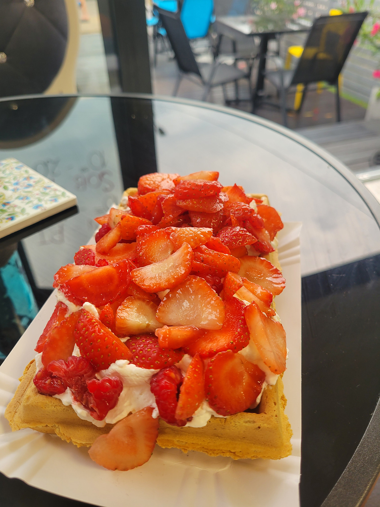

ul. Morska 32, Rewa
Menu
Wszystko przygotowujemy na miejscu, na bieżąco. Oferta zmienia się w ciągu sezonu — smaki lodów, ciasta i owoce do gofrów zależą od tego, co akurat pieczemy i co jest najlepsze. Aktualne ceny znajdziesz w kawiarni, przy ladzie i w witrynie.
Lody i inne
- Gałka lodówdo rożka albo do kubka
- Rurka z kremem
- Chmurka owocowabita śmietana i owoce
Milkshake
- Milkshakena naszych lodach, z bitą śmietaną i sosem
Desery lodowe
- Kinder Explosionmus owocowy, nutella, 3 gałki lodów, owoce, polewa, bita śmietana, batonik
- Oreo Obsessionmus owocowy, 2 gałki lodów, owoce, polewa, bita śmietana, ciasteczka, posypka
- Kitkat Killermus owocowy, 2 gałki lodów, owoce, polewa, bita śmietana, batonik, posypka
- Owocowa Fiestamus owocowy, 3 gałki lodów, owoce, polewa, bita śmietana, posypka
Lodoburger nowość
- Lodoburger z nutelląlody w pączku, cukier puder
- Lodoburger z kremem pistacjowymlody w pączku, cukier puder
Gofry — dodatki
- Suchy
- Cukier puder
- Bita śmietana
- Owoce w żelu
- Świeże owoce
- Dżem
- Polewa
- Krem pistacjowy
- Nutella
- Posypka
Gofry w zestawie
- Bita śmietana + owoce (mix)
- Bita śmietana + owoce w żelu
- Bita śmietana + polewa
- Nutella + owoce (mix)
- Nutella + owoce w żelu
- Nutella + bita śmietana
- Nutella + bita śmietana + owoce (mix)
Ciasta
- Sernik pistacjowywypiekany u nas
- Szarlotka z beząwypiekana u nas
- Jagodziankidrożdżowe, z kruszonką, wypiekane u nas
- Ciasta dniapełna oferta wypisana w witrynie
Granita
- Mała0,3 l
- Średnia0,4 l
- Duża0,5 l
Napoje gorące
- Flat white
- Americano
- Cappuccino
- Latte macchiato
- Espresso
- Herbata
Napoje zimne
- Kawa mrożona z gałką loda
- Woda niegazowana i gazowana
- Fuze Tea
- Cola, Fanta, Sprite
- Sok
- Burn
- Monster
- Red Bull
nie widzisz czegoś w menu?
Zapytaj — spróbujemy to zrobić
Jeśli mamy składniki, chętnie przygotujemy coś spoza karty. Tak powstał u nas milkshake na lodach: zaczęło się od pytania gościa, czy taki robimy. Zrobiliśmy, wyszedł tak dobrze, że został w menu na stałe.

alergeny
Jesz z alergią?
Prowadzimy pełną listę alergenów dla lodów, gofrów, dodatków, posypek i ciast. Powiedz przy zamówieniu, czego unikasz — sprawdzimy w karcie i doradzimy, co możesz zjeść bez obaw.